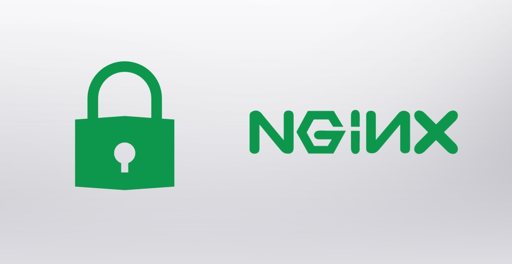
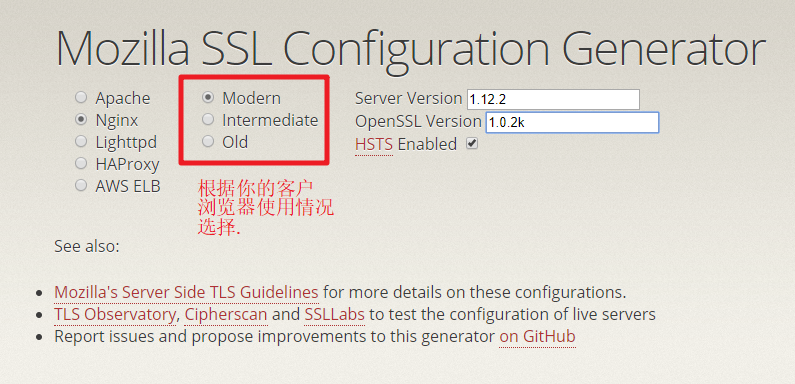
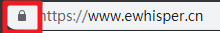
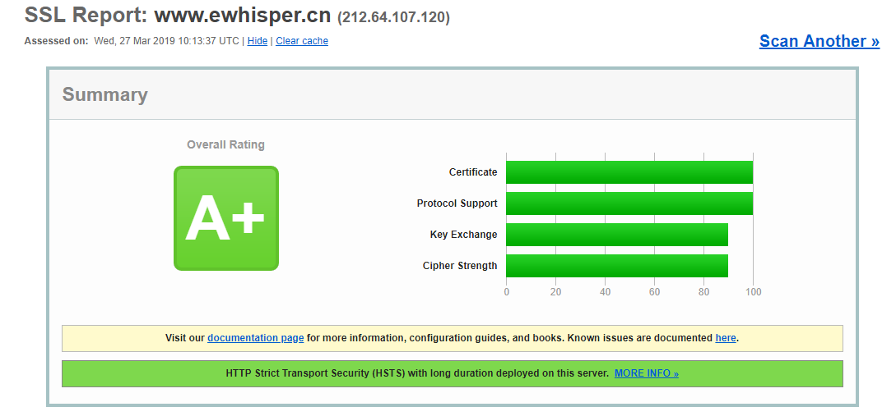

NGINX 配置SSL 支持
在 2019-06-19 Wednesday 发布于 DevOps 分类 • 1 min read

前言¶
上篇文章中, 我们已经申请好了SSL证书. 那么现在, 我们就要配置全站SSL了! 
这次的工作主要是NGINX的配置, 同时会有一些我的博客本身的配置.
博客本身配置更改包括: (这篇文章就先不细说了)
- 网页内链接全部从http改为https(其实配置下SITEURL, 工具会自动生成好) 并重新发布. (特别要注意, 如果有的站内css, js等没有用https就尴尬了, 会被各类浏览器拦截掉, 并提示"不安全的脚本")
- 网站有用到的第三方工具(如拨测), 把网站的地址改为 https开头的.
NGINX配置¶
首先, 创建并上传准备好的证书文件到指定目录: (crt和key文件)
$ sudo mkdir -p /etc/pki/nginx/
# 通过sftp上传到该目录
进行nginx.conf 的ssl配置, 本次主要涉及到server块的配置更改, 如下: (具体的指令作用见注释)
server {
listen 80;
server_name www.ewhisper.cn;
return 301 https://$host$request_uri;
}
server {
listen 443 ssl http2;
server_name www.ewhisper.cn;
root /usr/share/nginx/html; # 静态博客的存放位置
ssl_certificate "/etc/pki/nginx/1_www.ewhisper.cn_bundle.crt"; # 证书路径
ssl_certificate_key "/etc/pki/nginx/2_www.ewhisper.cn.key"; # 证书密钥路径
ssl_session_cache shared:SSL:50m; # ssl session cache分配50m空间, 缓存ssl session
ssl_session_timeout 1d; # ssl session 超时时间为1天
ssl_session_tickets off; # ssl session ticket 机制, 部分版本有bug, 视情况开启.
ssl_protocols TLSv1.2; # ssl 协议版本
ssl_ciphers 'ECDHE-ECDSA-AES256-GCM-SHA384:ECDHE-RSA-AES256-GCM-SHA384:ECDHE-ECDSA-CHACHA20-POLY1305:ECDHE-RSA-CHACHA20-POLY1305:ECDHE-ECDSA-AES128-GCM-SHA256:ECDHE-RSA-AES128-GCM-SHA256:ECDHE-ECDSA-AES256-SHA384:ECDHE-RSA-AES256-SHA384:ECDHE-ECDSA-AES128-SHA256:ECDHE-RSA-AES128-SHA256'; # ssl ciphers
ssl_prefer_server_ciphers on; # 倾向于使用server端的ciphers
# HSTS 6 months
add_header Strict-Transport-Security max-age=15768000;
# 添加个http header, 告诉浏览器直接转到https, 此功能有风险, 慎重选择.
# (比如你的证书过期忘记续了, 那么用户想转到http都没办法)
ssl_stapling on; # 启用ssl OCSP stapling功能, 服务端主动查询OCSP结果, 提高TLS效率
ssl_stapling_verify on; # 开启OCSP stapling 验证
# Load configuration files for the default server block.
include /etc/nginx/default.d/*.conf; # 我的博客的location在这里配置
#location / {
#}
error_page 404 /404.html;
location = /40x.html {
}
error_page 500 502 503 504 /50X.html;
location = /50X.html {
}
}
说明:
以上的某些指令, 我先大概介绍下, 后续会有文章做详细介绍.
return 301 https://$host$request_uri;HTTP的全部永久重定向到https对应的URL/usr/share/nginx/html静态博客的存放位置ssl_session_timeout 1d;ssl session 超时时间为1天ssl_session_tickets off; #ssl session ticket 机制, 部分版本有bug, 视情况开启.ssl_prefer_server_ciphers on;倾向于使用server端的ciphers- HSTS功能: 添加个HTTP header, 告诉浏览器直接转到https,
此功能有风险, 慎重选择. (比如你的证书过期忘记续了, 那么用户想转到HTTP都没办法)
ssl_stapling on;启用ssl OCSP stapling功能, 服务端主动查询OCSP结果, 提高TLS握手效率/etc/nginx/default.d/*.conf;我的博客location配置
火狐浏览器背后的基金会, 开源了一个非常好用的工具: ssl-config-generator
在这上边, 点一点就可以自动生成推荐的SSL配置了.

提一点, 如上图所示, 第二列一定要根据你的客户浏览器或客户端的版本使用情况慎重选择.
比如, 用户还在用Windows XP, IE6, Java 6, 那么只能选择Old.
接下来, 就是要重启nginx来生效了.
$ sudo nginx -t # 测试配置, 没问题再重启
$ sudo systemctl reload nginx.service
重启后, 测试发现 css js都没有生效. 
因为之前nginx刚配置过缓存. 当时脑子没转过来, 没有第一时间意识到可能是浏览器缓存的问题. 就直接nginx stop 再start了下. 结果悲催的我的网站可用性就从100%跌到99.81%了.
后来终于意识到可能是浏览器缓存的问题了, 清理了缓存后, 再启动, 终于页面显示正常, 图标也从"不安全"变成了小锁.

测试访问http://www.ewhisper.cn, 也会被强制转到 https://www.ewhisper.cn. 完美!
我的SSL评级¶
再来介绍个好东西 - SSL Labs. 可以对你的网站进行SSL 安全评级.
点击链接, 输入网站地址, 喝杯茶, 结果就出来了 - A+ 哈哈哈哈哈!!!!

最后附上我的完整报告